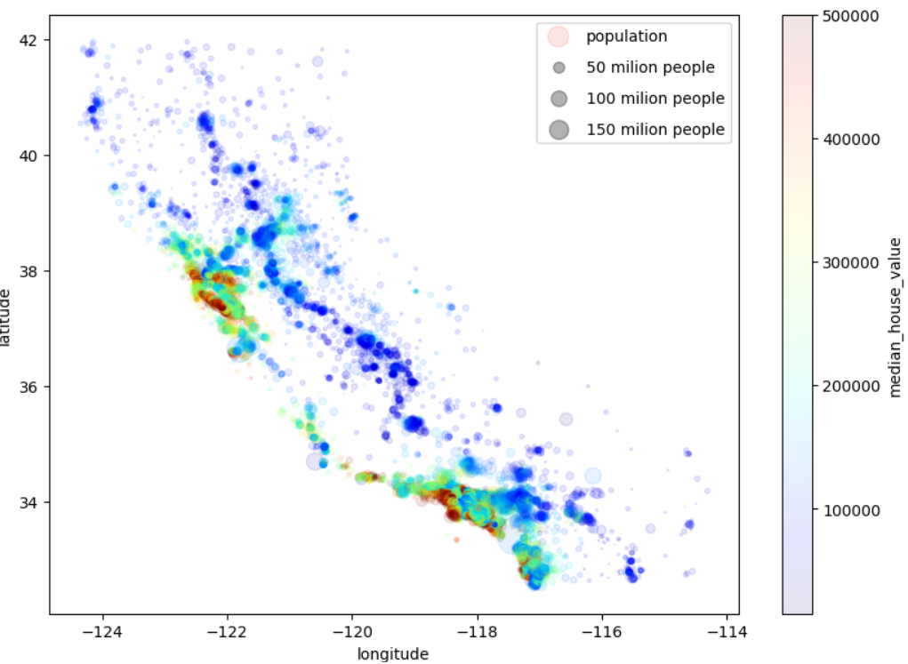

Điều tất yếu khi làm một dự án Machine learning đó chính là Tiền xử lý (Preprocessing). Và chúng ta luôn phải gặp phải bước trực quan hóa dữ liệu để từ đó phân tích và có thể đưa ra được những mô hình phù hợp để xử lý bài toán ta đặt ra.
Ví dụ ta có một bộ dữ liệu về học sinh có hai đặc trưng đó chính là chiều cao và cân nặng, quá đơn giản để trực quan dữ liệu này ta chỉ cần lấy hai trục tương ứng với hai đặc trưng vừa cho rồi thể hiện trên đó bởi các điểm.
Vậy giả sử ta thêm một số đặc trưng như là số đo vòng 1 thì sao? Có thể ta sẽ biểu diễn trong không gian ba chiều hay thông minh hơn là sử dụng lại hai chiều vừa làm và tùy chỉnh kích thước của điểm để thể hiện cho độ lớn của vòng 1.
Và nếu có thêm nhiều đặc trưng thì ta có thể nghĩ đến việc thêm nhiều thành phần để biểu thị nó như kích thước, màu sắc, độ mờ,... Đây là một ví dụ về trực quan hóa dữ liệu về giá thuê nhà của một bang ở Cali theo bảng đồ:
housing.plot(kind = 'scatter', x = 'longitude', y = 'latitude',alpha = 0.1,figsize = (10,7),
s = housing['population'] / 100,label = 'population', c = "median_house_value",cmap = plt.get_cmap('jet'),colorbar=True)
for area in [50, 100, 150]:
plt.scatter([], [], c='k', alpha=0.3, s=area, label=str(area) + ' milion people')
plt.legend(scatterpoints = 1,frameon=True, labelspacing=1)
Đây là kết quả:

Nhưng giả sử có nhiều đặc trưng hơn, việc vẽ đồ thị nhiều chiều là vô cùng không khả thi hoặc nếu bạn cứ thêm nhiều thành phần vào thì nó sẽ làm đống dữ liệu đó thành đống bùi nhùi và bạn khó có thể khai thác được gì từ đó.
Vậy câu hỏi đặt ra, làm sao để trực quan những dữ liệu khi mà số đặc trưng quá nhiều? Khi đó ta sẽ tìm cách giảm số đặc trưng xuống ít nhất có thể mà hạn chế thất thoát dữ liệu nhiều nhất hay còn gọi là giảm số chiều của dữ liệu (Reduce Dimention).
Trong bài viết này mình sẽ sử dụng thuật toán PCA (Principal component analysis) và t-SNE (t-distributed Stochastic Neighbor Embedding) để giảm số chiều của dữ liệu sau đó gom cụm bằng K-means clustering, cuối cùng sẽ trực quan dữ liệu để ta thấy rõ sự phân hóa sau khi giảm chiều, lưu ý sẽ không nói nhiều về toán học mà chỉ nói về cú pháp.
Ta sẽ sử dụng bộ Dataset dữ liệu khách hàng để tiện cho việc xử lý mô hình.
Về ý tưởng, PCA là một thuật toán dùng để giảm chiều của bộ dữ liệu tuyến tính - ví dụ như quan hệ về chiều cao và cân nặng. Đây là một đoạn code ví dụ:
from sklearn.decomposition import PCA
from sklearn.datasets import load_iris
import matplotlib.pyplot as plt
# Load dữ liệu iris dataset
iris = load_iris()
X = iris.data
# Khởi tạo mô hình PCA với số thành phần chính là 2
pca = PCA(n_components=2)
# Fit và chuyển đổi dữ liệu
X_pca = pca.fit_transform(X)
# In ra số chiều ban đầu và sau khi giảm chiều
print("Kích thước của X ban đầu: ", X.shape)
print("Kích thước của X sau khi giảm chiều: ", X_pca.shape)
# Trực quan hóa dữ liệu
plt.scatter(X_pca[:,0],X_pca[:,1])
plt.show()
Đây là kết quả:
Khác với, PCA thì T-SNE là thuật toán thường dùng để giảm chiều của bộ dữ liệu phi tuyến tính - như lãi kép. Đây là một đoạn code ví dụ:
from sklearn.manifold import TSNE
from sklearn.datasets import load_iris
import matplotlib.pyplot as plt
# Load dữ liệu iris dataset
iris = load_iris()
X = iris.data
# Khởi tạo mô hình PCA với số thành phần chính là 2
tsne = TSNE(n_components=2)
# Fit và chuyển đổi dữ liệu
X_tsne = tsne.fit_transform(X)
# In ra số chiều ban đầu và sau khi giảm chiều
print("Kích thước của X ban đầu: ", X.shape)
print("Kích thước của X sau khi giảm chiều: ", X_tsne.shape)
# Trực quan hóa dữ liệu
plt.scatter(X_tsne[:,0],X_tsne[:,1])
plt.show()
Đây là kết quả:
Thông thường, người phân tích sẽ kết hợp hai phương pháp trên để trực quan hóa được dễ dàng hơn, xin phép bỏ qua các bước tiền xử lý tập dữ liệu mà chỉ chú trọng đến trực quan hóa, code đẩy đủ về Preproceesing có ở link Github.
Ta sẽ giảm số chiều xuống 5 bằng PCA , sau đó dùng t-SNE giảm từ 5 xuống 2:
# PCA
from sklearn.decomposition import PCA
pca = PCA(n_components=5)
x_pca = pca.fit_transform(ds)
x_pca.shape
# t-SNE
from sklearn.manifold import TSNE
tsne = TSNE(n_components=2) # Lại chọn đại :)
x_tsne = tsne.fit_transform(x_pca)
x_tsne.shape
# Visualization
plt.scatter(x_tsne[:,0],x_tsne[:,1])
plt.xlabel('T-SNE feature 1')
plt.ylabel('T-SNE feature 2')
plt.show()
Đây là kết quả:
Đến đây có thể thấy dữ liệu phân hóa rất rõ ràng, tiếp theo ta có thể sử dụng K-means Clustering để biểu diễn rõ hơn sự phân bố đó:
# K_mean clustering
from sklearn.cluster import KMeans
kmeans = KMeans(n_clusters = 3) # Kmeans với 3 tâm
kmeans.fit(x_tsne)
labels = kmeans.predict(x_tsne)
center = kmeans.cluster_centers_
print(center)
# In ra tọa độ các tâm
>> array([[ 47.805756 , 1.0575591 ],[-48.915985 , 4.86533 ],[ -0.41753447, -3.9070725 ]], dtype=float32)
# Khoảng cách ơ-clid
def euclid_distance(a,b):
return (a[0] - b[0])**2 + (a[1] - b[1])**2
# Xem điểm gần tâm nào hơn
def check_nearly(a,b,c):
if a == min(a,b,c):
return 0
elif b == min(a,b,c):
return 1
else:
return 2
# Label cho các đối tượng
y_pre = []
for i in range(len(x_tsne)):
a = euclid_distance(x_tsne[i],center[0])
b = euclid_distance(x_tsne[i],center[1])
c = euclid_distance(x_tsne[i],center[2])
y_pre.append(check_nearly(a,b,c))
y_pre = np.asarray(y_pre).reshape(-1,1)
# Trực quan hóa
plt.scatter(x_tsne[:,0],x_tsne[:,1],c = y_pre)
plt.xlabel('T-SNE feature 1')
plt.ylabel('T-SNE feature 2')
plt.show()
Đây là kết quả: